Chapter 14 Real-World Case Studies
14.1 Chapter Overview
This chapter brings together everything you’ve learned to solve real-world sport analytics problems. Each case study follows the complete analytics workflow:
- Problem Definition - What question are we answering?
- Data Collection - Gathering and importing data
- Data Cleaning - Preparing data for analysis
- Exploratory Analysis - Understanding patterns and relationships
- Statistical Analysis - Testing hypotheses and building models
- Visualization - Creating compelling graphics
- Interpretation - Drawing meaningful conclusions
- Recommendations - Providing actionable insights
These case studies integrate multiple techniques from previous chapters and demonstrate how to communicate findings effectively to stakeholders.
14.2 Learning Objectives
By the end of this chapter, you will be able to:
- Execute complete analytics projects from start to finish
- Integrate multiple analytical techniques in a single workflow
- Clean and prepare real-world messy data
- Select appropriate methods for different problem types
- Create professional reports with visualizations and recommendations
- Present findings to non-technical stakeholders
- Document your analytical process for reproducibility
14.3 Case Study 1: UNF Basketball Attendance Analysis
14.3.1 Problem Definition
The UNF Athletics Director wants to understand what drives attendance at basketball games and identify strategies to increase fan engagement. Specifically, they want to know:
- What factors are associated with higher attendance?
- Can we predict attendance for upcoming games?
- What marketing strategies should we prioritize?
14.3.2 Data Collection and Import
We’ll create a dataset representing two seasons of UNF basketball games with various factors that might influence attendance.
library(dplyr)
library(ggplot2)
library(caret)
library(lubridate)
library(patchwork)
# Create comprehensive attendance dataset
set.seed(456)
n_games <- 50
attendance_data <- data.frame(
game_id = 1:n_games,
date = seq(as.Date("2022-11-01"), by = "week", length.out = n_games),
opponent = sample(c("Top-Ranked", "Conference", "Non-Conference", "Rival"),
n_games, replace = TRUE,
prob = c(0.15, 0.4, 0.3, 0.15)),
day_of_week = sample(c("Tuesday", "Wednesday", "Thursday", "Friday", "Saturday"),
n_games, replace = TRUE,
prob = c(0.15, 0.15, 0.2, 0.25, 0.25)),
ticket_promotion = sample(c("Yes", "No"), n_games, replace = TRUE, prob = c(0.3, 0.7)),
giveaway = sample(c("Yes", "No"), n_games, replace = TRUE, prob = c(0.25, 0.75)),
weather = sample(c("Clear", "Rain", "Cold"), n_games, replace = TRUE,
prob = c(0.6, 0.25, 0.15)),
team_win_streak = sample(0:7, n_games, replace = TRUE),
exam_week = sample(c("Yes", "No"), n_games, replace = TRUE, prob = c(0.15, 0.85))
)
# Generate attendance based on realistic factors
attendance_data <- attendance_data %>%
mutate(
# Base attendance
base_attendance = 1200,
# Opponent effect
opponent_effect = case_when(
opponent == "Rival" ~ 800,
opponent == "Top-Ranked" ~ 600,
opponent == "Conference" ~ 300,
opponent == "Non-Conference" ~ 100
),
# Day of week effect
day_effect = case_when(
day_of_week == "Saturday" ~ 400,
day_of_week == "Friday" ~ 200,
day_of_week == "Thursday" ~ 50,
TRUE ~ -100
),
# Promotion effects
promo_effect = ifelse(ticket_promotion == "Yes", 250, 0),
giveaway_effect = ifelse(giveaway == "Yes", 180, 0),
# Weather effect
weather_effect = case_when(
weather == "Clear" ~ 100,
weather == "Rain" ~ -150,
weather == "Cold" ~ -50
),
# Win streak effect (each win adds fans)
streak_effect = team_win_streak * 80,
# Exam week penalty
exam_effect = ifelse(exam_week == "Yes", -300, 0),
# Calculate total attendance with random noise
attendance = pmax(500, # minimum attendance
base_attendance + opponent_effect + day_effect +
promo_effect + giveaway_effect + weather_effect +
streak_effect + exam_effect + rnorm(n_games, 0, 150))
) %>%
dplyr::select(game_id, date, opponent, day_of_week, ticket_promotion,
giveaway, weather, team_win_streak, exam_week, attendance)
# Round attendance
attendance_data$attendance <- round(attendance_data$attendance)
# View first few rows
head(attendance_data, 10)## game_id date opponent day_of_week ticket_promotion giveaway weather team_win_streak exam_week
## 1 1 2022-11-01 Conference Tuesday No No Clear 0 Yes
## 2 2 2022-11-08 Conference Wednesday No Yes Rain 6 No
## 3 3 2022-11-15 Rival Friday No No Rain 1 No
## 4 4 2022-11-22 Top-Ranked Friday No No Clear 0 No
## 5 5 2022-11-29 Rival Friday Yes No Clear 3 No
## 6 6 2022-12-06 Conference Tuesday Yes Yes Clear 6 No
## 7 7 2022-12-13 Conference Tuesday Yes No Clear 6 No
## 8 8 2022-12-20 Conference Thursday Yes No Rain 0 No
## 9 9 2022-12-27 Conference Saturday Yes No Clear 1 No
## 10 10 2023-01-03 Conference Friday No No Clear 2 Yes
## attendance
## 1 1151
## 2 1698
## 3 1980
## 4 1753
## 5 2931
## 6 2202
## 7 2138
## 8 1698
## 9 2295
## 10 182114.3.3 Data Cleaning and Preparation
## Missing values per column:## game_id date opponent day_of_week ticket_promotion giveaway
## 0 0 0 0 0 0
## weather team_win_streak exam_week attendance
## 0 0 0 0## 'data.frame': 50 obs. of 10 variables:
## $ game_id : int 1 2 3 4 5 6 7 8 9 10 ...
## $ date : Date, format: "2022-11-01" "2022-11-08" "2022-11-15" "2022-11-22" ...
## $ opponent : chr "Conference" "Conference" "Rival" "Top-Ranked" ...
## $ day_of_week : chr "Tuesday" "Wednesday" "Friday" "Friday" ...
## $ ticket_promotion: chr "No" "No" "No" "No" ...
## $ giveaway : chr "No" "Yes" "No" "No" ...
## $ weather : chr "Clear" "Rain" "Rain" "Clear" ...
## $ team_win_streak : int 0 6 1 0 3 6 6 0 1 2 ...
## $ exam_week : chr "Yes" "No" "No" "No" ...
## $ attendance : num 1151 1698 1980 1753 2931 ...# Convert categorical variables to factors with logical ordering
attendance_data <- attendance_data %>%
mutate(
opponent = factor(opponent,
levels = c("Non-Conference", "Conference",
"Top-Ranked", "Rival")),
day_of_week = factor(day_of_week,
levels = c("Tuesday", "Wednesday", "Thursday",
"Friday", "Saturday")),
ticket_promotion = factor(ticket_promotion, levels = c("No", "Yes")),
giveaway = factor(giveaway, levels = c("No", "Yes")),
weather = factor(weather, levels = c("Cold", "Rain", "Clear")),
exam_week = factor(exam_week, levels = c("Yes", "No")),
# Extract month for seasonal analysis
month = month(date, label = TRUE)
)
# Create summary statistics
cat("\nAttendance Summary Statistics:\n")##
## Attendance Summary Statistics:## Min. 1st Qu. Median Mean 3rd Qu. Max.
## 1151 1798 2118 2105 2330 311414.3.4 Exploratory Data Analysis
Let’s explore the data visually to understand patterns.
# Distribution of attendance
p1 <- ggplot(attendance_data, aes(x = attendance)) +
geom_histogram(bins = 20, fill = "#003366", color = "white") +
geom_vline(aes(xintercept = mean(attendance)),
color = "red", linetype = "dashed", linewidth = 1) +
labs(title = "Distribution of Game Attendance",
subtitle = paste("Mean:", round(mean(attendance_data$attendance)), "fans"),
x = "Attendance",
y = "Number of Games") +
theme_minimal()
# Attendance by opponent type
p2 <- ggplot(attendance_data, aes(x = opponent, y = attendance, fill = opponent)) +
geom_boxplot(alpha = 0.7) +
scale_fill_manual(values = c("#d9d9d9", "#0066cc", "#ff6600", "#cc0000")) +
labs(title = "Attendance by Opponent Type",
x = "Opponent Category",
y = "Attendance") +
theme_minimal() +
theme(legend.position = "none",
axis.text.x = element_text(angle = 45, hjust = 1))
# Combine plots
p1 + p2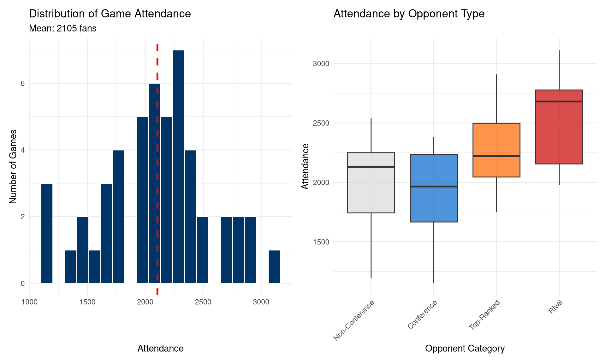
# Multiple factors analysis
p3 <- ggplot(attendance_data, aes(x = day_of_week, y = attendance, fill = day_of_week)) +
geom_boxplot(alpha = 0.7) +
scale_fill_brewer(palette = "Blues") +
labs(title = "Attendance by Day of Week",
x = "Day of Week",
y = "Attendance") +
theme_minimal() +
theme(legend.position = "none",
axis.text.x = element_text(angle = 45, hjust = 1))
p4 <- ggplot(attendance_data, aes(x = team_win_streak, y = attendance)) +
geom_point(alpha = 0.6, color = "#003366", size = 3) +
geom_smooth(method = "lm", se = TRUE, color = "#0066cc") +
labs(title = "Attendance vs. Team Win Streak",
x = "Current Win Streak",
y = "Attendance") +
theme_minimal()
p5 <- attendance_data %>%
group_by(ticket_promotion, giveaway) %>%
dplyr::summarize(avg_attendance = mean(attendance), .groups = "drop") %>%
mutate(promotion_type = interaction(ticket_promotion, giveaway)) %>%
ggplot(aes(x = promotion_type, y = avg_attendance, fill = promotion_type)) +
geom_col(alpha = 0.8) +
scale_fill_manual(values = c("#d9d9d9", "#66b3ff", "#ff9966", "#003366")) +
labs(title = "Average Attendance by Promotion Strategy",
subtitle = "Ticket Promotion . Giveaway",
x = "Promotion Type",
y = "Average Attendance") +
theme_minimal() +
theme(legend.position = "none",
axis.text.x = element_text(angle = 45, hjust = 1))
p6 <- ggplot(attendance_data, aes(x = weather, y = attendance, fill = weather)) +
geom_violin(alpha = 0.7) +
geom_boxplot(width = 0.2, fill = "white", alpha = 0.8) +
scale_fill_manual(values = c("#6699cc", "#999999", "#ffcc66")) +
labs(title = "Attendance by Weather Conditions",
x = "Weather",
y = "Attendance") +
theme_minimal() +
theme(legend.position = "none")
# Combine all plots
(p3 + p4) / (p5 + p6)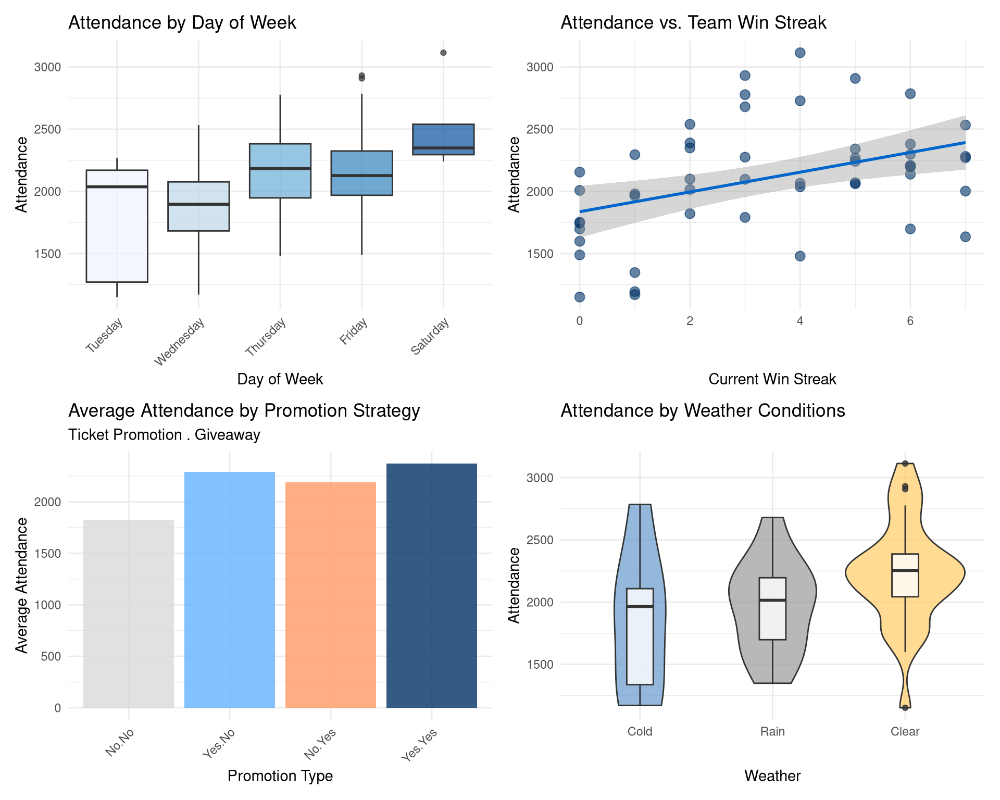
# Time series view
ggplot(attendance_data, aes(x = date, y = attendance)) +
geom_line(color = "#003366", linewidth = 1) +
geom_point(aes(color = opponent), size = 3, alpha = 0.7) +
geom_smooth(method = "loess", se = TRUE, color = "#0066cc", linetype = "dashed") +
scale_color_manual(values = c("#d9d9d9", "#0066cc", "#ff6600", "#cc0000")) +
labs(title = "Attendance Over Time by Opponent Type",
subtitle = "Smooth trend line shows seasonal patterns",
x = "Game Date",
y = "Attendance",
color = "Opponent") +
theme_minimal() +
theme(legend.position = "top")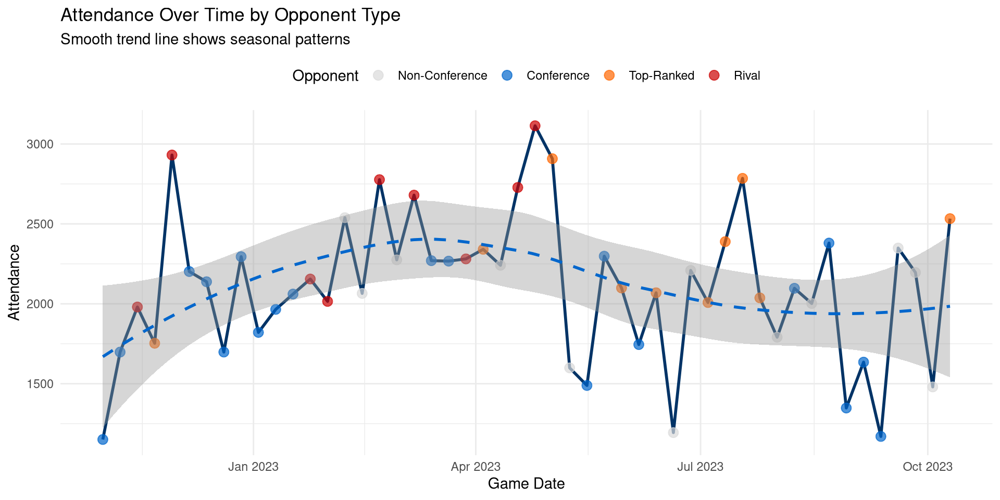
14.3.5 Statistical Analysis
Now let’s test specific hypotheses about what drives attendance.
# Test 1: Do promotions significantly increase attendance?
promo_test <- t.test(attendance ~ ticket_promotion, data = attendance_data)
cat("Ticket Promotion Effect:\n")## Ticket Promotion Effect:cat("Mean attendance with promotion:",
round(mean(attendance_data$attendance[attendance_data$ticket_promotion == "Yes"])), "\n")## Mean attendance with promotion: 2312cat("Mean attendance without promotion:",
round(mean(attendance_data$attendance[attendance_data$ticket_promotion == "No"])), "\n")## Mean attendance without promotion: 1942## t-statistic: -3.046## p-value: 0.004# Test 2: Does opponent type affect attendance?
opponent_anova <- aov(attendance ~ opponent, data = attendance_data)
cat("ANOVA: Attendance by Opponent Type\n")## ANOVA: Attendance by Opponent Type## Df Sum Sq Mean Sq F value Pr(>F)
## opponent 3 2988212 996071 6.416 0.00101 **
## Residuals 46 7141311 155246
## ---
## Signif. codes: 0 '***' 0.001 '**' 0.01 '*' 0.05 '.' 0.1 ' ' 1# Post-hoc test
if (summary(opponent_anova)[[1]][["Pr(>F)"]][1] < 0.05) {
cat("\nPost-hoc Tukey HSD test:\n")
print(TukeyHSD(opponent_anova))
}##
## Post-hoc Tukey HSD test:
## Tukey multiple comparisons of means
## 95% family-wise confidence level
##
## Fit: aov(formula = attendance ~ opponent, data = attendance_data)
##
## $opponent
## diff lwr upr p adj
## Conference-Non-Conference -114.5789 -501.837985 272.6801 0.8592293
## Top-Ranked-Non-Conference 297.2000 -152.485471 746.8855 0.3046836
## Rival-Non-Conference 522.8889 59.777023 986.0008 0.0212821
## Top-Ranked-Conference 411.7789 1.470614 822.0873 0.0488810
## Rival-Conference 637.4678 212.487242 1062.4484 0.0012705
## Rival-Top-Ranked 225.6889 -256.862627 708.2404 0.6009153# Test 3: Does day of week matter?
day_anova <- aov(attendance ~ day_of_week, data = attendance_data)
cat("\n\nANOVA: Attendance by Day of Week\n")##
##
## ANOVA: Attendance by Day of Week## Df Sum Sq Mean Sq F value Pr(>F)
## day_of_week 4 2156551 539138 3.043 0.0265 *
## Residuals 45 7972972 177177
## ---
## Signif. codes: 0 '***' 0.001 '**' 0.01 '*' 0.05 '.' 0.1 ' ' 1# Test 4: Correlation between win streak and attendance
cor_test <- cor.test(attendance_data$team_win_streak, attendance_data$attendance)
cat("\n\nCorrelation: Win Streak vs Attendance\n")##
##
## Correlation: Win Streak vs Attendance## Correlation coefficient: 0.414## p-value: 0.002814.3.6 Predictive Modeling
Build a model to predict attendance for future games.
# Split data into training and test sets
set.seed(789)
train_index <- createDataPartition(attendance_data$attendance, p = 0.75, list = FALSE)
train_data <- attendance_data[train_index, ]
test_data <- attendance_data[-train_index, ]
# Build multiple regression model
attendance_model <- lm(attendance ~ opponent + day_of_week + ticket_promotion +
giveaway + weather + team_win_streak + exam_week,
data = train_data)
# Model summary
cat("Multiple Regression Model:\n")## Multiple Regression Model:##
## Call:
## lm(formula = attendance ~ opponent + day_of_week + ticket_promotion +
## giveaway + weather + team_win_streak + exam_week, data = train_data)
##
## Residuals:
## Min 1Q Median 3Q Max
## -287.38 -78.26 10.40 92.06 184.62
##
## Coefficients:
## Estimate Std. Error t value Pr(>|t|)
## (Intercept) 893.50 128.28 6.965 3.34e-07 ***
## opponentConference 173.10 68.38 2.531 0.018320 *
## opponentTop-Ranked 476.92 70.73 6.743 5.65e-07 ***
## opponentRival 677.59 82.80 8.184 2.11e-08 ***
## day_of_weekWednesday 17.30 102.54 0.169 0.867463
## day_of_weekThursday 90.70 94.77 0.957 0.348071
## day_of_weekFriday 270.48 90.20 2.999 0.006223 **
## day_of_weekSaturday 535.54 107.90 4.963 4.56e-05 ***
## ticket_promotionYes 269.59 53.69 5.021 3.94e-05 ***
## giveawayYes 264.53 58.01 4.560 0.000127 ***
## weatherRain -79.98 82.66 -0.968 0.342899
## weatherClear 183.56 75.47 2.432 0.022840 *
## team_win_streak 85.78 11.78 7.284 1.59e-07 ***
## exam_weekNo 215.91 72.33 2.985 0.006429 **
## ---
## Signif. codes: 0 '***' 0.001 '**' 0.01 '*' 0.05 '.' 0.1 ' ' 1
##
## Residual standard error: 145.8 on 24 degrees of freedom
## Multiple R-squared: 0.9353, Adjusted R-squared: 0.9003
## F-statistic: 26.7 on 13 and 24 DF, p-value: 4.156e-11# Make predictions on test set
test_predictions <- predict(attendance_model, newdata = test_data)
# Evaluate model performance
test_rmse <- sqrt(mean((test_data$attendance - test_predictions)^2))
test_mae <- mean(abs(test_data$attendance - test_predictions))
test_r2 <- cor(test_data$attendance, test_predictions)^2
cat("\n\nModel Performance on Test Set:\n")##
##
## Model Performance on Test Set:## RMSE: 175.9 fans## MAE: 148.53 fans## R-squared: 0.837# Visualize predictions
prediction_df <- data.frame(
actual = test_data$attendance,
predicted = test_predictions,
opponent = test_data$opponent
)
p7 <- ggplot(prediction_df, aes(x = actual, y = predicted, color = opponent)) +
geom_point(size = 3, alpha = 0.7) +
geom_abline(intercept = 0, slope = 1, linetype = "dashed", color = "red") +
scale_color_manual(values = c("#d9d9d9", "#0066cc", "#ff6600", "#cc0000")) +
labs(title = "Predicted vs Actual Attendance",
subtitle = "Dashed line represents perfect predictions",
x = "Actual Attendance",
y = "Predicted Attendance",
color = "Opponent") +
theme_minimal()
# Residual plot
prediction_df$residual <- prediction_df$actual - prediction_df$predicted
p8 <- ggplot(prediction_df, aes(x = predicted, y = residual)) +
geom_point(alpha = 0.6, color = "#003366", size = 3) +
geom_hline(yintercept = 0, linetype = "dashed", color = "red") +
geom_smooth(se = TRUE, color = "#0066cc") +
labs(title = "Residual Plot",
subtitle = "Checking for systematic prediction errors",
x = "Predicted Attendance",
y = "Residual (Actual - Predicted)") +
theme_minimal()
p7 + p8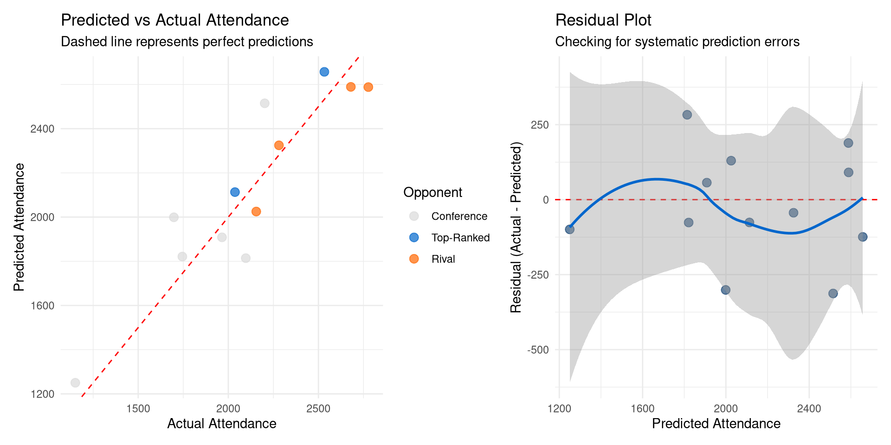
# Variable importance
coef_df <- data.frame(
variable = names(coef(attendance_model))[-1], # Exclude intercept
coefficient = coef(attendance_model)[-1]
) %>%
arrange(desc(abs(coefficient)))
ggplot(coef_df, aes(x = reorder(variable, abs(coefficient)),
y = coefficient,
fill = coefficient > 0)) +
geom_col(alpha = 0.8) +
scale_fill_manual(values = c("#cc0000", "#003366"),
labels = c("Decreases Attendance", "Increases Attendance")) +
coord_flip() +
labs(title = "Variable Importance in Attendance Prediction",
subtitle = "Coefficient magnitude indicates impact on attendance",
x = "Variable",
y = "Coefficient Value",
fill = "Effect") +
theme_minimal()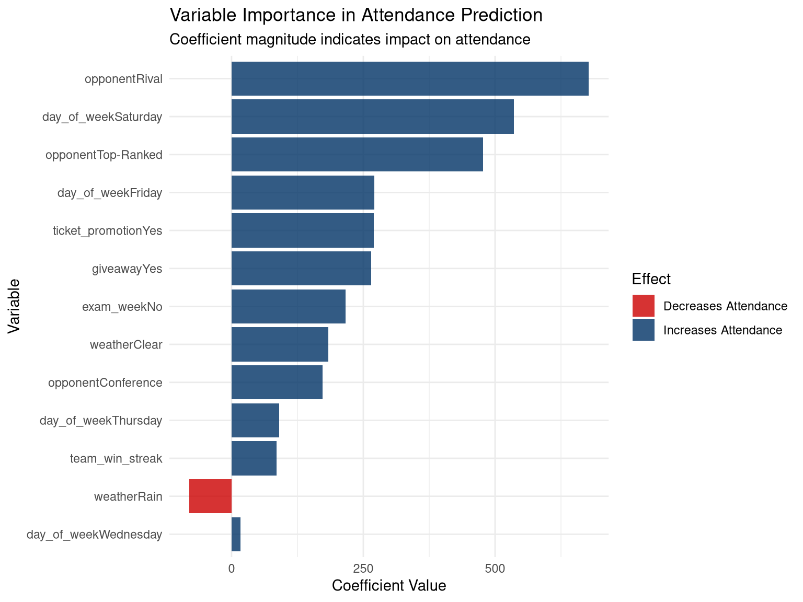
14.3.7 Actionable Recommendations
Based on our analysis, here are data-driven recommendations for the Athletics Director:
# Calculate ROI for different strategies
promotion_impact <- mean(attendance_data$attendance[attendance_data$ticket_promotion == "Yes"]) -
mean(attendance_data$attendance[attendance_data$ticket_promotion == "No"])
giveaway_impact <- mean(attendance_data$attendance[attendance_data$giveaway == "Yes"]) -
mean(attendance_data$attendance[attendance_data$giveaway == "No"])
# Weekend vs weekday
weekend_attendance <- mean(attendance_data$attendance[
attendance_data$day_of_week %in% c("Friday", "Saturday")
])
weekday_attendance <- mean(attendance_data$attendance[
!attendance_data$day_of_week %in% c("Friday", "Saturday")
])
cat("KEY FINDINGS AND RECOMMENDATIONS:\n")## KEY FINDINGS AND RECOMMENDATIONS:## ===================================================## 1. PROMOTIONS STRATEGY:## - Ticket promotions increase attendance by 370 fans on average## - Giveaways increase attendance by 227 fans## - Recommendation: Use promotions strategically for mid-week games## 2. SCHEDULING INSIGHTS:## - Weekend games average 2256 fans## - Weekday games average 1976 fans## - Recommendation: Schedule high-profile opponents on weekends## 3. WIN STREAK MOMENTUM:cat(" - Each additional win in streak adds ~",
round(coef(attendance_model)["team_win_streak"]), "fans\n")## - Each additional win in streak adds ~ 86 fans## - Recommendation: Increase marketing during winning streaks## 4. OPPONENT SELECTION:cat(" - Rival games average",
round(mean(attendance_data$attendance[attendance_data$opponent == "Rival"])), "fans\n")## - Rival games average 2518 fanscat(" - Non-conference games average",
round(mean(attendance_data$attendance[attendance_data$opponent == "Non-Conference"])),
"fans\n")## - Non-conference games average 1995 fans## - Recommendation: Prioritize conference and rivalry games## 5. AVOID EXAM WEEKS:## - Exam week games show significantly lower attendance## - Recommendation: Schedule fewer games during exam periods14.3.8 Summary Visualization for Stakeholders
Create a one-page summary visualization for presentation.
# Create summary dashboard
summary_p1 <- ggplot(attendance_data, aes(x = opponent, y = attendance, fill = opponent)) +
geom_boxplot(alpha = 0.7, show.legend = FALSE) +
scale_fill_manual(values = c("#d9d9d9", "#0066cc", "#ff6600", "#cc0000")) +
labs(title = "Attendance by Opponent",
x = NULL, y = "Attendance") +
theme_minimal() +
theme(axis.text.x = element_text(angle = 45, hjust = 1, size = 10))
summary_p2 <- attendance_data %>%
mutate(has_promotion = ticket_promotion == "Yes" | giveaway == "Yes") %>%
group_by(has_promotion) %>%
dplyr::summarize(avg_attendance = mean(attendance)) %>%
ggplot(aes(x = has_promotion, y = avg_attendance, fill = has_promotion)) +
geom_col(alpha = 0.8, show.legend = FALSE) +
scale_fill_manual(values = c("#d9d9d9", "#003366")) +
scale_x_discrete(labels = c("No Promotion", "With Promotion")) +
geom_text(aes(label = round(avg_attendance)), vjust = -0.5, size = 5) +
labs(title = "Promotion Impact",
x = NULL, y = "Avg Attendance") +
theme_minimal()
summary_p3 <- ggplot(attendance_data, aes(x = team_win_streak, y = attendance)) +
geom_point(alpha = 0.5, color = "#003366") +
geom_smooth(method = "lm", color = "#0066cc", linewidth = 1.5) +
labs(title = "Win Streak Effect",
x = "Win Streak", y = "Attendance") +
theme_minimal()
summary_p4 <- attendance_data %>%
mutate(day_type = ifelse(day_of_week %in% c("Friday", "Saturday"),
"Weekend", "Weekday")) %>%
group_by(day_type) %>%
dplyr::summarize(avg_attendance = mean(attendance)) %>%
ggplot(aes(x = day_type, y = avg_attendance, fill = day_type)) +
geom_col(alpha = 0.8, show.legend = FALSE) +
scale_fill_manual(values = c("#999999", "#003366")) +
geom_text(aes(label = round(avg_attendance)), vjust = -0.5, size = 5) +
labs(title = "Weekend vs Weekday",
x = NULL, y = "Avg Attendance") +
theme_minimal()
# Combine into dashboard
(summary_p1 + summary_p2) / (summary_p3 + summary_p4) +
plot_annotation(
title = "UNF Basketball Attendance Analysis Summary",
subtitle = paste("Based on", nrow(attendance_data), "games | Average Attendance:",
round(mean(attendance_data$attendance)), "fans"),
theme = theme(plot.title = element_text(size = 18, face = "bold"),
plot.subtitle = element_text(size = 12))
)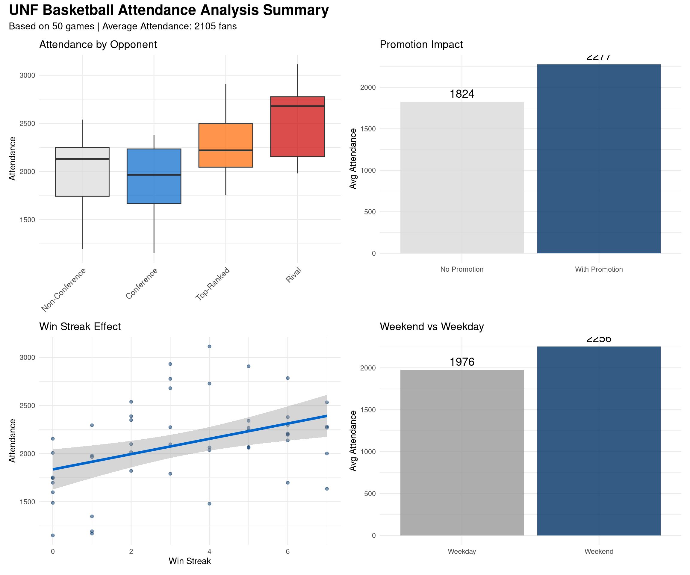
14.4 Case Study 2: Player Performance Segmentation
14.4.1 Problem Definition
The coaching staff wants to understand the different types of players on the roster to tailor training programs. They need to:
- Identify distinct player types based on performance metrics
- Understand what characterizes each player segment
- Make data-driven decisions about roster construction
14.4.2 Data Import and Preparation
# Create player performance dataset
set.seed(2024)
n_players <- 60
player_data <- data.frame(
player_id = 1:n_players,
player_name = paste("Player", 1:n_players)
)
# Generate player archetypes
archetypes <- c(rep("scorer", 15), rep("facilitator", 12),
rep("defender", 15), rep("all-around", 10),
rep("role-player", 8))
# Shuffle archetypes
player_data$true_archetype <- sample(archetypes)
# Generate stats based on archetype
for(i in 1:n_players) {
arch <- player_data$true_archetype[i]
if(arch == "scorer") {
player_data$ppg[i] <- rnorm(1, 18, 3)
player_data$apg[i] <- rnorm(1, 2, 0.8)
player_data$rpg[i] <- rnorm(1, 4, 1)
player_data$fg_pct[i] <- rnorm(1, 45, 4)
player_data$three_pct[i] <- rnorm(1, 38, 5)
} else if(arch == "facilitator") {
player_data$ppg[i] <- rnorm(1, 10, 2)
player_data$apg[i] <- rnorm(1, 7, 1.5)
player_data$rpg[i] <- rnorm(1, 3, 0.8)
player_data$fg_pct[i] <- rnorm(1, 48, 3)
player_data$three_pct[i] <- rnorm(1, 35, 4)
} else if(arch == "defender") {
player_data$ppg[i] <- rnorm(1, 8, 2)
player_data$apg[i] <- rnorm(1, 2, 0.7)
player_data$rpg[i] <- rnorm(1, 8, 1.5)
player_data$fg_pct[i] <- rnorm(1, 50, 4)
player_data$three_pct[i] <- rnorm(1, 30, 5)
} else if(arch == "all-around") {
player_data$ppg[i] <- rnorm(1, 14, 2)
player_data$apg[i] <- rnorm(1, 5, 1)
player_data$rpg[i] <- rnorm(1, 6, 1)
player_data$fg_pct[i] <- rnorm(1, 47, 3)
player_data$three_pct[i] <- rnorm(1, 36, 4)
} else { # role-player
player_data$ppg[i] <- rnorm(1, 5, 1.5)
player_data$apg[i] <- rnorm(1, 1.5, 0.5)
player_data$rpg[i] <- rnorm(1, 3, 1)
player_data$fg_pct[i] <- rnorm(1, 42, 5)
player_data$three_pct[i] <- rnorm(1, 32, 6)
}
}
# Ensure realistic bounds
player_data <- player_data %>%
mutate(
ppg = pmax(0, ppg),
apg = pmax(0, apg),
rpg = pmax(0, rpg),
fg_pct = pmax(20, pmin(65, fg_pct)),
three_pct = pmax(15, pmin(50, three_pct))
)
# Round for realism (columns 4:8 are the numeric stats)
player_data[, 4:8] <- round(player_data[, 4:8], 1)
head(player_data, 10)## player_id player_name true_archetype ppg apg rpg fg_pct three_pct
## 1 1 Player 1 scorer 19.3 1.3 4.0 47.0 47.9
## 2 2 Player 2 defender 5.6 2.1 8.5 52.7 33.2
## 3 3 Player 3 all-around 17.9 4.4 5.2 45.1 31.9
## 4 4 Player 4 facilitator 8.6 4.8 3.7 47.3 39.0
## 5 5 Player 5 role-player 5.0 2.3 3.9 44.7 33.1
## 6 6 Player 6 defender 11.3 1.9 5.0 52.9 32.5
## 7 7 Player 7 defender 3.8 2.8 6.2 51.2 30.4
## 8 8 Player 8 defender 8.4 1.8 10.1 52.7 24.8
## 9 9 Player 9 defender 8.0 1.1 9.5 53.5 21.2
## 10 10 Player 10 scorer 18.4 2.9 3.8 44.0 36.714.4.3 Exploratory Analysis
## Player Performance Summary:## ppg apg rpg fg_pct three_pct
## Min. : 2.900 Min. :0.000 Min. : 1.900 Min. :35.30 Min. :21.20
## 1st Qu.: 7.975 1st Qu.:1.800 1st Qu.: 3.400 1st Qu.:45.17 1st Qu.:31.75
## Median :11.200 Median :2.500 Median : 4.200 Median :47.10 Median :34.75
## Mean :12.175 Mean :3.297 Mean : 5.123 Mean :47.09 Mean :34.37
## 3rd Qu.:15.850 3rd Qu.:4.875 3rd Qu.: 6.475 3rd Qu.:50.42 3rd Qu.:38.15
## Max. :26.800 Max. :9.600 Max. :10.600 Max. :54.00 Max. :47.90# Correlation matrix
library(corrplot)
cor_matrix <- cor(player_data[, 4:8])
par(mfrow = c(1, 1))
corrplot(cor_matrix, method = "color", type = "upper",
addCoef.col = "black", number.cex = 0.8,
tl.col = "black", tl.srt = 45,
title = "Correlation Matrix of Performance Metrics",
mar = c(0, 0, 2, 0))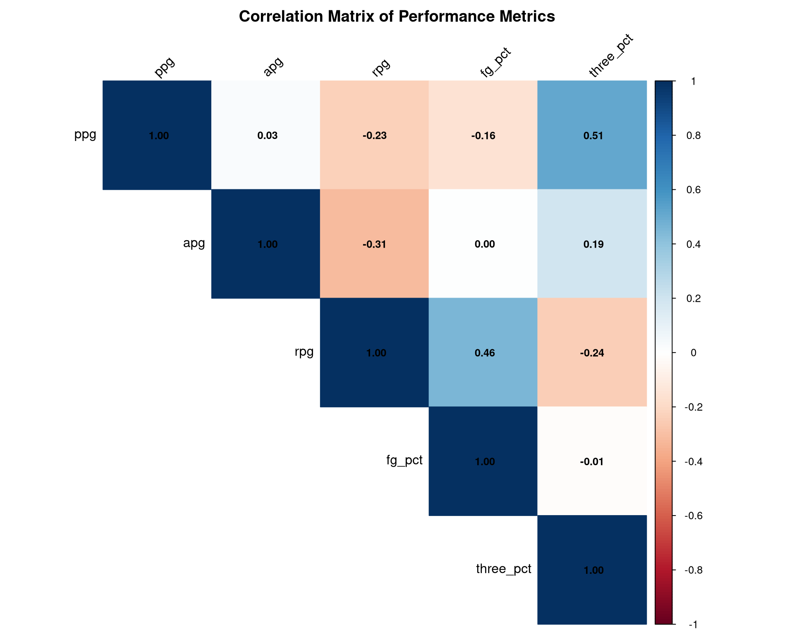
# Scatterplot matrix
library(GGally)
ggpairs(player_data[, 4:8],
title = "Scatterplot Matrix: Player Performance Metrics",
lower = list(continuous = wrap("points", alpha = 0.5, color = "#003366")),
diag = list(continuous = wrap("barDiag", fill = "#0066cc")),
upper = list(continuous = wrap("cor", size = 4))) +
theme_minimal()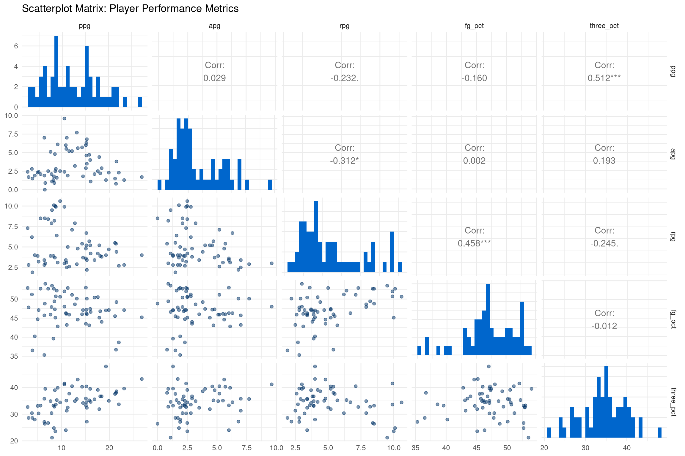
14.4.4 Clustering Analysis
Identify player segments using k-means clustering.
# Prepare data for clustering (scale the features)
cluster_data <- player_data[, 4:8]
cluster_data_scaled <- scale(cluster_data)
# Determine optimal number of clusters
library(factoextra)
# Elbow method
set.seed(456)
fviz_nbclust(cluster_data_scaled, kmeans, method = "wss") +
labs(title = "Elbow Method: Optimal Number of Clusters") +
theme_minimal()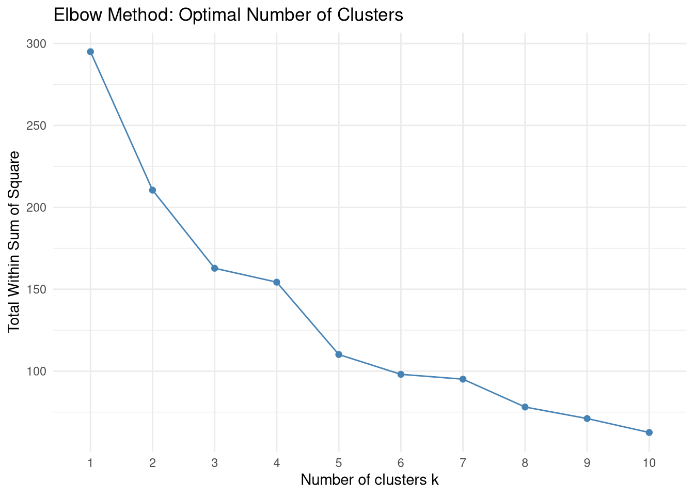
# Silhouette method
fviz_nbclust(cluster_data_scaled, kmeans, method = "silhouette") +
labs(title = "Silhouette Method: Optimal Number of Clusters") +
theme_minimal()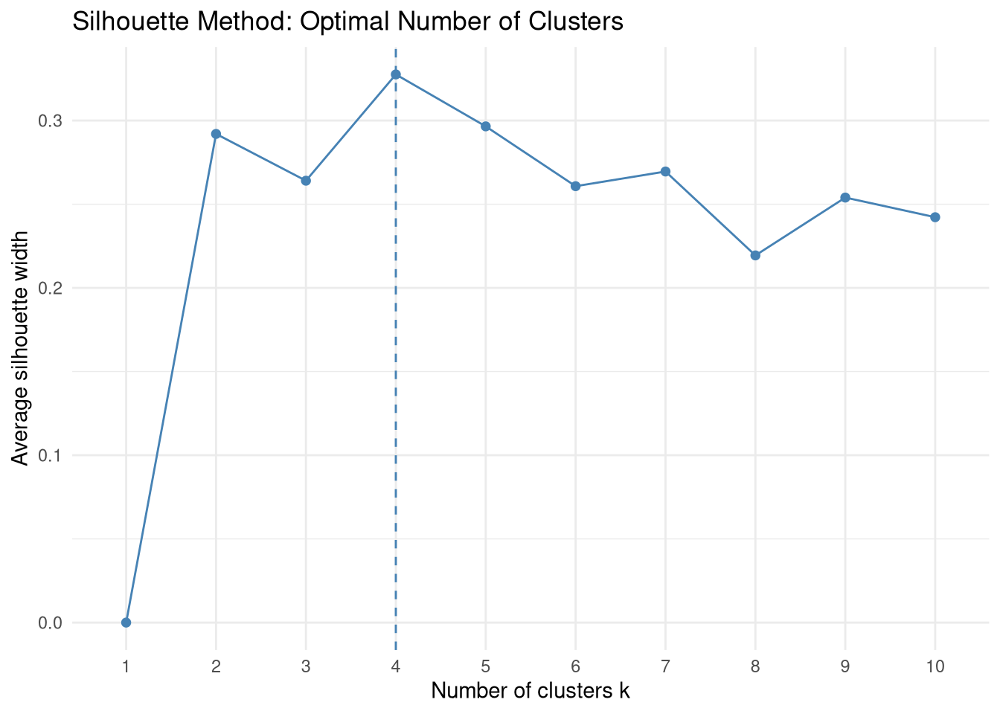
# Perform k-means with 5 clusters
set.seed(456)
kmeans_result <- kmeans(cluster_data_scaled, centers = 5, nstart = 25)
# Add cluster assignments to data
player_data$cluster <- as.factor(kmeans_result$cluster)
# Cluster sizes
cat("Cluster Sizes:\n")## Cluster Sizes:##
## 1 2 3 4 5
## 20 15 5 13 7##
##
## Cluster Centers (Original Scale):cluster_centers <- aggregate(. ~ cluster,
data = player_data[, c(4:8, ncol(player_data))],
FUN = mean)
print(cluster_centers)## cluster ppg apg rpg fg_pct three_pct
## 1 1 18.605000 2.585000 4.310000 45.70500 37.29000
## 2 2 11.573333 6.293333 3.620000 46.75333 35.52667
## 3 3 7.760000 1.580000 9.300000 50.56000 24.54000
## 4 4 8.438462 2.369231 7.530769 51.24615 34.74615
## 5 5 5.185714 1.857143 3.214286 41.60000 29.84286# Visualize clusters
fviz_cluster(kmeans_result, data = cluster_data_scaled,
palette = c("#003366", "#0066cc", "#ff6600", "#cc0000", "#66cc66"),
geom = "point",
ellipse.type = "convex",
ggtheme = theme_minimal(),
main = "Player Segmentation: K-means Clusters") +
theme(legend.position = "top")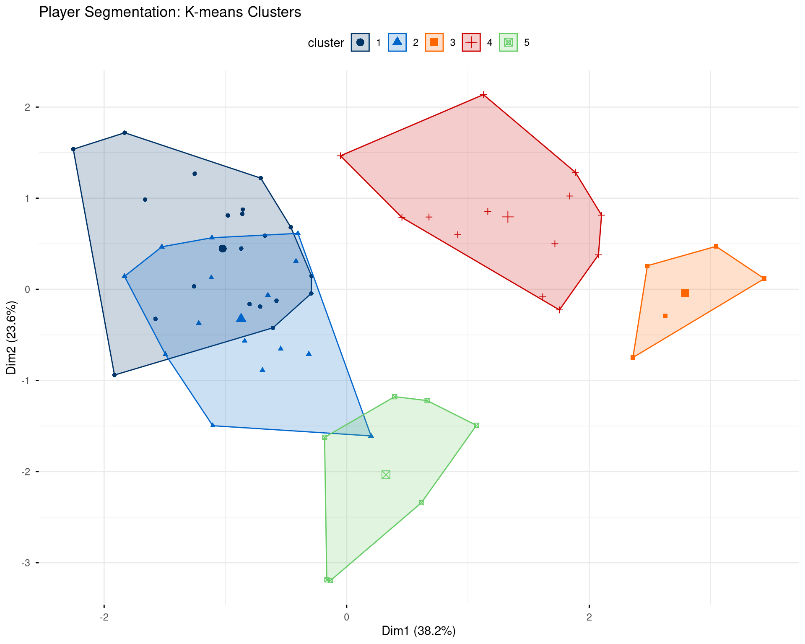
14.4.5 Characterizing Each Segment
# Label clusters based on characteristics
cluster_labels <- cluster_centers %>%
mutate(
label = case_when(
ppg == max(ppg) ~ "Elite Scorers",
apg == max(apg) ~ "Playmakers",
rpg == max(rpg) ~ "Rebounders",
ppg > 12 & apg > 4 ~ "All-Around Stars",
TRUE ~ "Role Players"
)
) %>%
dplyr::select(cluster, label)
player_data <- player_data %>%
left_join(cluster_labels, by = "cluster")
# Create radar chart for each cluster
library(fmsb)
# Prepare data for radar chart
radar_data <- cluster_centers %>%
dplyr::select(-cluster) %>%
as.data.frame()
# Add max and min rows
max_vals <- apply(radar_data, 2, max) * 1.1
min_vals <- rep(0, ncol(radar_data))
radar_data <- rbind(max_vals, min_vals, radar_data)
# Create individual radar charts
par(mfrow = c(2, 3), mar = c(1, 1, 3, 1))
colors_border <- c("#003366", "#0066cc", "#ff6600", "#cc0000", "#66cc66")
colors_in <- paste0(colors_border, "40")
for(i in 1:5) {
radarchart(radar_data[c(1, 2, i+2), ],
axistype = 1,
pcol = colors_border[i],
pfcol = colors_in[i],
plwd = 3,
plty = 1,
cglcol = "grey",
cglty = 1,
axislabcol = "black",
caxislabels = seq(0, max_vals[1], length.out = 5),
cglwd = 0.8,
vlcex = 0.8,
title = paste("Cluster", i, "-",
cluster_labels$label[cluster_labels$cluster == i]))
}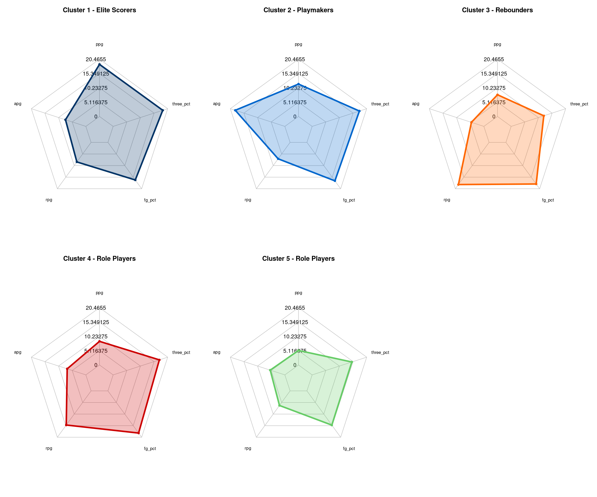
# Compare clusters across metrics
par(mfrow = c(1, 1))
cluster_long <- player_data %>%
tidyr::pivot_longer(cols = c(ppg, apg, rpg, fg_pct, three_pct),
names_to = "metric",
values_to = "value") %>%
mutate(metric = factor(metric,
levels = c("ppg", "apg", "rpg", "fg_pct", "three_pct"),
labels = c("Points", "Assists", "Rebounds",
"FG%", "3PT%")))
ggplot(cluster_long, aes(x = label, y = value, fill = label)) +
geom_boxplot(alpha = 0.7) +
facet_wrap(~metric, scales = "free_y", ncol = 3) +
scale_fill_manual(values = c("#003366", "#0066cc", "#ff6600", "#cc0000", "#66cc66")) +
labs(title = "Player Segment Comparison Across Performance Metrics",
x = "Player Segment",
y = "Value",
fill = "Segment") +
theme_minimal() +
theme(axis.text.x = element_blank(),
axis.ticks.x = element_blank(),
legend.position = "top")
14.4.6 Statistical Validation
Test whether clusters are significantly different.
# ANOVA for each metric
metrics <- c("ppg", "apg", "rpg", "fg_pct", "three_pct")
cat("Statistical Tests for Cluster Differences:\n")## Statistical Tests for Cluster Differences:## ============================================================for(metric in metrics) {
formula_str <- paste(metric, "~ cluster")
anova_result <- aov(as.formula(formula_str), data = player_data)
cat("\n", toupper(metric), ":\n", sep = "")
print(summary(anova_result))
# Effect size (eta-squared)
ss_total <- sum((player_data[[metric]] - mean(player_data[[metric]]))^2)
ss_between <- sum(anova_result$fitted.values^2)
eta_squared <- ss_between / ss_total
cat("Effect Size (eta-squared):", round(eta_squared, 3), "\n")
}##
## PPG:
## Df Sum Sq Mean Sq F value Pr(>F)
## cluster 4 1453.2 363.3 44.86 <2e-16 ***
## Residuals 55 445.4 8.1
## ---
## Signif. codes: 0 '***' 0.001 '**' 0.01 '*' 0.05 '.' 0.1 ' ' 1
## Effect Size (eta-squared): 5.45
##
## APG:
## Df Sum Sq Mean Sq F value Pr(>F)
## cluster 4 185.25 46.31 37.11 5.04e-15 ***
## Residuals 55 68.65 1.25
## ---
## Signif. codes: 0 '***' 0.001 '**' 0.01 '*' 0.05 '.' 0.1 ' ' 1
## Effect Size (eta-squared): 3.298
##
## RPG:
## Df Sum Sq Mean Sq F value Pr(>F)
## cluster 4 235.21 58.8 34.55 2.05e-14 ***
## Residuals 55 93.62 1.7
## ---
## Signif. codes: 0 '***' 0.001 '**' 0.01 '*' 0.05 '.' 0.1 ' ' 1
## Effect Size (eta-squared): 5.505
##
## FG_PCT:
## Df Sum Sq Mean Sq F value Pr(>F)
## cluster 4 535.8 133.95 13.19 1.34e-07 ***
## Residuals 55 558.6 10.16
## ---
## Signif. codes: 0 '***' 0.001 '**' 0.01 '*' 0.05 '.' 0.1 ' ' 1
## Effect Size (eta-squared): 122.083
##
## THREE_PCT:
## Df Sum Sq Mean Sq F value Pr(>F)
## cluster 4 819.0 204.76 13.14 1.4e-07 ***
## Residuals 55 856.8 15.58
## ---
## Signif. codes: 0 '***' 0.001 '**' 0.01 '*' 0.05 '.' 0.1 ' ' 1
## Effect Size (eta-squared): 42.77414.4.7 Recommendations for Coaching Staff
##
## PLAYER SEGMENTATION INSIGHTS:## ============================================================for(seg in unique(player_data$label)) {
segment_players <- player_data %>% filter(label == seg)
n <- nrow(segment_players)
cat(seg, "(n =", n, "players):\n")
cat(" Avg PPG:", round(mean(segment_players$ppg), 1), "\n")
cat(" Avg APG:", round(mean(segment_players$apg), 1), "\n")
cat(" Avg RPG:", round(mean(segment_players$rpg), 1), "\n")
cat(" Avg FG%:", round(mean(segment_players$fg_pct), 1), "\n")
cat(" Avg 3PT%:", round(mean(segment_players$three_pct), 1), "\n")
# Recommendations
if(grepl("Scorer", seg)) {
cat(" Recommendation: Focus on defensive skills and playmaking\n")
} else if(grepl("Playmaker", seg)) {
cat(" Recommendation: Develop scoring consistency and shot selection\n")
} else if(grepl("Rebounder", seg)) {
cat(" Recommendation: Enhance offensive skills and conditioning\n")
} else if(grepl("All-Around", seg)) {
cat(" Recommendation: These are complete players; focus on leadership\n")
} else {
cat(" Recommendation: Specialize in 1-2 areas for defined role\n")
}
cat("\n")
}## Elite Scorers (n = 20 players):
## Avg PPG: 18.6
## Avg APG: 2.6
## Avg RPG: 4.3
## Avg FG%: 45.7
## Avg 3PT%: 37.3
## Recommendation: Focus on defensive skills and playmaking
##
## Role Players (n = 20 players):
## Avg PPG: 7.3
## Avg APG: 2.2
## Avg RPG: 6
## Avg FG%: 47.9
## Avg 3PT%: 33
## Recommendation: Specialize in 1-2 areas for defined role
##
## Playmakers (n = 15 players):
## Avg PPG: 11.6
## Avg APG: 6.3
## Avg RPG: 3.6
## Avg FG%: 46.8
## Avg 3PT%: 35.5
## Recommendation: Develop scoring consistency and shot selection
##
## Rebounders (n = 5 players):
## Avg PPG: 7.8
## Avg APG: 1.6
## Avg RPG: 9.3
## Avg FG%: 50.6
## Avg 3PT%: 24.5
## Recommendation: Enhance offensive skills and conditioning##
## ROSTER CONSTRUCTION INSIGHTS:## - Ensure balanced representation across segments## - Current roster composition:for(seg in unique(player_data$label)) {
pct <- round(100 * sum(player_data$label == seg) / nrow(player_data), 1)
cat(" *", seg, ":", pct, "%\n")
}## * Elite Scorers : 33.3 %
## * Role Players : 33.3 %
## * Playmakers : 25 %
## * Rebounders : 8.3 %14.5 Case Study 3: Integrated Championship Analysis
14.5.1 Problem Definition
It’s the end of the season and the analytics team needs to create a comprehensive report answering:
- What factors contributed to wins vs losses this season?
- Which statistical categories should we prioritize next season?
- Can we predict championship success for upcoming seasons?
14.5.2 Complete Workflow
# Create season game log data
set.seed(999)
n_games_season <- 32
game_log <- data.frame(
game_num = 1:n_games_season,
opponent_rank = sample(1:50, n_games_season, replace = TRUE),
home_away = sample(c("Home", "Away"), n_games_season, replace = TRUE,
prob = c(0.55, 0.45))
)
# Generate realistic game statistics
game_log <- game_log %>%
mutate(
# Our team stats
our_fg_pct = rnorm(n_games_season, 45, 5),
our_three_pct = rnorm(n_games_season, 35, 7),
our_ft_pct = rnorm(n_games_season, 72, 8),
our_rebounds = round(rnorm(n_games_season, 38, 5)),
our_assists = round(rnorm(n_games_season, 15, 4)),
our_turnovers = round(rnorm(n_games_season, 13, 3)),
our_steals = round(rnorm(n_games_season, 7, 2)),
our_blocks = round(rnorm(n_games_season, 4, 2)),
# Opponent stats
opp_fg_pct = rnorm(n_games_season, 43, 5),
opp_three_pct = rnorm(n_games_season, 33, 7),
opp_rebounds = round(rnorm(n_games_season, 36, 5)),
opp_turnovers = round(rnorm(n_games_season, 14, 3)),
# Calculate points
our_points = round(65 + our_fg_pct * 0.8 + our_three_pct * 0.3 +
our_rebounds * 0.2 + our_assists * 0.4 -
our_turnovers * 0.5 + rnorm(n_games_season, 0, 5)),
opp_points = round(65 + opp_fg_pct * 0.8 + opp_three_pct * 0.3 +
opp_rebounds * 0.2 - opp_turnovers * 0.3 +
rnorm(n_games_season, 0, 5)),
# Adjust for opponent strength and home court
opp_points = opp_points + ifelse(opponent_rank < 25, 8, 0) -
ifelse(home_away == "Home", 5, 0),
# Determine result
result = ifelse(our_points > opp_points, "Win", "Loss"),
point_diff = our_points - opp_points
)
# Ensure percentages are realistic
game_log <- game_log %>%
mutate(
our_fg_pct = pmax(25, pmin(65, our_fg_pct)),
our_three_pct = pmax(15, pmin(55, our_three_pct)),
our_ft_pct = pmax(50, pmin(95, our_ft_pct)),
opp_fg_pct = pmax(25, pmin(65, opp_fg_pct)),
opp_three_pct = pmax(15, pmin(55, opp_three_pct)),
# Convert result to factor for modeling
result = factor(result, levels = c("Loss", "Win"))
)
cat("Season Record:", sum(game_log$result == "Win"), "-",
sum(game_log$result == "Loss"), "\n")## Season Record: 19 - 13## game_num opponent_rank home_away our_fg_pct our_three_pct our_ft_pct our_rebounds our_assists our_turnovers
## 1 1 27 Home 44.69745 34.16103 78.21380 41 8 12
## 2 2 4 Away 41.57507 53.03216 62.92836 41 14 14
## 3 3 7 Home 46.51687 38.28078 78.77741 39 20 11
## 4 4 41 Home 44.17160 29.90361 78.97130 40 16 10
## 5 5 14 Home 41.24248 26.70611 66.52157 41 11 11
## 6 6 1 Away 54.17237 39.73588 72.18713 31 18 14
## 7 7 10 Away 44.94587 44.10339 66.94028 41 19 6
## 8 8 22 Home 41.12473 41.67000 66.59846 39 15 18
## our_steals our_blocks opp_fg_pct opp_three_pct opp_rebounds opp_turnovers our_points opp_points result
## 1 7 1 48.55926 27.86937 43 16 118 104 Win
## 2 4 6 41.04067 46.44652 46 13 117 125 Loss
## 3 8 5 44.03533 35.31572 45 16 117 119 Loss
## 4 6 5 40.75520 40.43590 42 14 122 108 Win
## 5 6 7 47.04967 30.17795 41 15 112 120 Loss
## 6 6 6 44.29620 25.43165 30 12 122 124 Loss
## 7 10 6 40.27784 34.24772 35 21 136 112 Win
## 8 10 4 43.96965 23.18052 46 11 107 125 Loss
## point_diff
## 1 14
## 2 -8
## 3 -2
## 4 14
## 5 -8
## 6 -2
## 7 24
## 8 -1814.5.3 Phase 1: Exploratory Analysis
# Win/Loss patterns
p1 <- game_log %>%
mutate(game_segment = cut(game_num, breaks = 4,
labels = c("Q1", "Q2", "Q3", "Q4"))) %>%
group_by(game_segment, result) %>%
dplyr::summarize(count = n(), .groups = "drop") %>%
ggplot(aes(x = game_segment, y = count, fill = result)) +
geom_col(position = "dodge", alpha = 0.8) +
scale_fill_manual(values = c("#cc0000", "#003366")) +
labs(title = "Wins vs Losses by Season Quarter",
x = "Season Quarter", y = "Number of Games", fill = "Result") +
theme_minimal()
p2 <- ggplot(game_log, aes(x = result, y = our_fg_pct, fill = result)) +
geom_violin(alpha = 0.7) +
geom_boxplot(width = 0.2, fill = "white") +
scale_fill_manual(values = c("#cc0000", "#003366")) +
labs(title = "Field Goal % by Result",
x = "Result", y = "Our FG%") +
theme_minimal() +
theme(legend.position = "none")
p3 <- ggplot(game_log, aes(x = result, y = our_turnovers, fill = result)) +
geom_violin(alpha = 0.7) +
geom_boxplot(width = 0.2, fill = "white") +
scale_fill_manual(values = c("#cc0000", "#003366")) +
labs(title = "Turnovers by Result",
x = "Result", y = "Our Turnovers") +
theme_minimal() +
theme(legend.position = "none")
p4 <- ggplot(game_log, aes(x = home_away, fill = result)) +
geom_bar(position = "fill", alpha = 0.8) +
scale_fill_manual(values = c("#cc0000", "#003366")) +
scale_y_continuous(labels = scales::percent) +
labs(title = "Win Rate: Home vs Away",
x = "Location", y = "Percentage", fill = "Result") +
theme_minimal()
p5 <- ggplot(game_log, aes(x = opponent_rank, y = point_diff, color = result)) +
geom_point(size = 3, alpha = 0.7) +
geom_hline(yintercept = 0, linetype = "dashed") +
scale_color_manual(values = c("#cc0000", "#003366")) +
labs(title = "Point Differential vs Opponent Rank",
x = "Opponent Rank (1 = Best)", y = "Point Differential",
color = "Result") +
theme_minimal()
p6 <- game_log %>%
mutate(cumulative_wins = cumsum(result == "Win"),
win_pct = cumulative_wins / game_num) %>%
ggplot(aes(x = game_num, y = win_pct)) +
geom_line(color = "#003366", linewidth = 1.2) +
geom_point(aes(color = result), size = 2.5) +
scale_color_manual(values = c("#cc0000", "#66cc66")) +
scale_y_continuous(labels = scales::percent, limits = c(0, 1)) +
labs(title = "Cumulative Win Percentage Over Season",
x = "Game Number", y = "Win %", color = "Result") +
theme_minimal()
(p1 + p2 + p3) / (p4 + p5 + p6)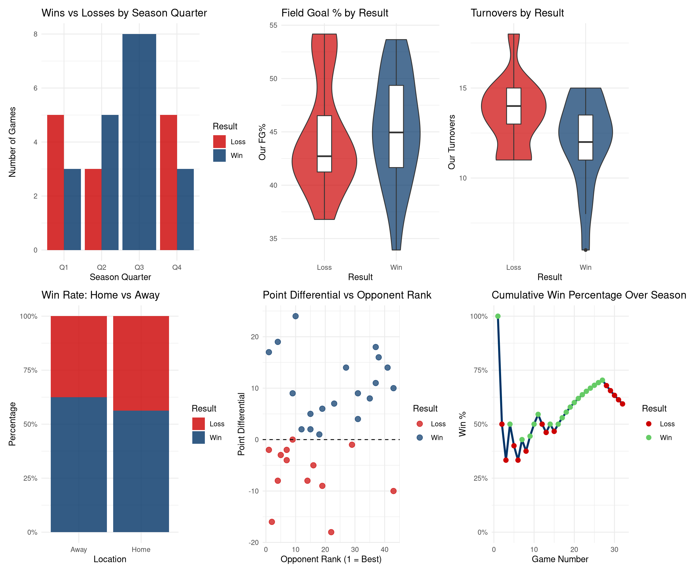
14.5.4 Phase 2: Statistical Analysis
## KEY STATISTICS: WINS VS LOSSES## ============================================================metrics_compare <- c("our_fg_pct", "our_three_pct", "our_rebounds",
"our_assists", "our_turnovers", "our_points")
for(metric in metrics_compare) {
wins <- game_log[[metric]][game_log$result == "Win"]
losses <- game_log[[metric]][game_log$result == "Loss"]
t_test <- t.test(wins, losses)
metric_label <- gsub("our_", "", metric)
metric_label <- gsub("_", " ", metric_label)
metric_label <- toupper(metric_label)
cat(metric_label, ":\n")
cat(" Wins:", round(mean(wins), 2), "\n")
cat(" Losses:", round(mean(losses), 2), "\n")
cat(" Difference:", round(mean(wins) - mean(losses), 2), "\n")
cat(" t-statistic:", round(t_test$statistic, 3), "\n")
cat(" p-value:", round(t_test$p.value, 4), "\n")
cat(" Significant:", ifelse(t_test$p.value < 0.05, "YES", "NO"), "\n\n")
}## FG PCT :
## Wins: 45.16
## Losses: 44.54
## Difference: 0.63
## t-statistic: 0.325
## p-value: 0.748
## Significant: NO
##
## THREE PCT :
## Wins: 33.25
## Losses: 35.63
## Difference: -2.38
## t-statistic: -0.878
## p-value: 0.3895
## Significant: NO
##
## REBOUNDS :
## Wins: 36.89
## Losses: 38.46
## Difference: -1.57
## t-statistic: -0.959
## p-value: 0.3458
## Significant: NO
##
## ASSISTS :
## Wins: 14.68
## Losses: 15.85
## Difference: -1.16
## t-statistic: -0.755
## p-value: 0.457
## Significant: NO
##
## TURNOVERS :
## Wins: 12
## Losses: 13.62
## Difference: -1.62
## t-statistic: -2.065
## p-value: 0.0479
## Significant: YES
##
## POINTS :
## Wins: 121
## Losses: 114.69
## Difference: 6.31
## t-statistic: 2.916
## p-value: 0.0072
## Significant: YES##
## CORRELATIONS WITH POINT DIFFERENTIAL:## ============================================================numeric_vars <- game_log %>% dplyr::select(starts_with("our_"), -our_points)
correlations <- sapply(numeric_vars, function(x) {
cor.test(x, game_log$point_diff)$estimate
})
correlations_df <- data.frame(
metric = names(correlations),
correlation = as.numeric(correlations)
) %>%
arrange(desc(abs(correlation))) %>%
mutate(metric = gsub("our_", "", metric),
metric = gsub("_", " ", metric))
print(correlations_df, row.names = FALSE)## metric correlation
## turnovers.cor -0.564736731
## fg pct.cor 0.210664877
## assists.cor -0.144088381
## rebounds.cor -0.114591949
## blocks.cor 0.089944296
## steals.cor 0.057259453
## three pct.cor -0.019350334
## ft pct.cor 0.003648387# Visualize correlations
ggplot(correlations_df, aes(x = reorder(metric, correlation), y = correlation,
fill = correlation > 0)) +
geom_col(alpha = 0.8) +
scale_fill_manual(values = c("#cc0000", "#003366")) +
coord_flip() +
labs(title = "Feature Importance: Correlation with Point Differential",
subtitle = "Higher absolute correlation = stronger relationship with winning margin",
x = "Metric",
y = "Correlation Coefficient") +
theme_minimal() +
theme(legend.position = "none")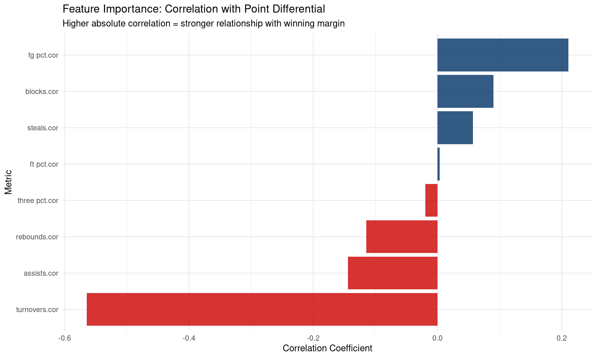
14.5.5 Phase 3: Predictive Model
# Build classification model for wins/losses
set.seed(2024)
# Create training/test split
train_idx <- createDataPartition(game_log$result, p = 0.75, list = FALSE)
train_games <- game_log[train_idx, ]
test_games <- game_log[-train_idx, ]
# Logistic regression model
win_model <- glm(result ~ our_fg_pct + our_three_pct + our_rebounds +
our_assists + our_turnovers + home_away + opponent_rank,
data = train_games,
family = binomial)
cat("WIN PREDICTION MODEL\n")## WIN PREDICTION MODEL## ============================================================##
## Call:
## glm(formula = result ~ our_fg_pct + our_three_pct + our_rebounds +
## our_assists + our_turnovers + home_away + opponent_rank,
## family = binomial, data = train_games)
##
## Coefficients:
## Estimate Std. Error z value Pr(>|z|)
## (Intercept) 28.19885 17.60670 1.602 0.1092
## our_fg_pct 0.12293 0.20701 0.594 0.5526
## our_three_pct -0.07254 0.17457 -0.416 0.6778
## our_rebounds -0.52741 0.31921 -1.652 0.0985 .
## our_assists 0.05597 0.19425 0.288 0.7732
## our_turnovers -1.19189 0.89308 -1.335 0.1820
## home_awayHome -1.95024 2.60605 -0.748 0.4542
## opponent_rank 0.26609 0.19442 1.369 0.1711
## ---
## Signif. codes: 0 '***' 0.001 '**' 0.01 '*' 0.05 '.' 0.1 ' ' 1
##
## (Dispersion parameter for binomial family taken to be 1)
##
## Null deviance: 33.651 on 24 degrees of freedom
## Residual deviance: 14.762 on 17 degrees of freedom
## AIC: 30.762
##
## Number of Fisher Scoring iterations: 8# Predictions
test_probs <- predict(win_model, newdata = test_games, type = "response")
test_preds <- ifelse(test_probs > 0.5, "Win", "Loss")
test_preds <- factor(test_preds, levels = c("Loss", "Win"))
test_actual <- factor(test_games$result, levels = c("Loss", "Win"))
# Evaluate
library(caret)
cm <- confusionMatrix(test_preds, test_actual, positive = "Win")
cat("\n\nCONFUSION MATRIX ON TEST SET:\n")##
##
## CONFUSION MATRIX ON TEST SET:## Reference
## Prediction Loss Win
## Loss 1 2
## Win 2 2##
## Model Performance:## Accuracy: 0.429## Sensitivity (Recall): 0.5## Specificity: 0.333## Precision: 0.5# ROC Curve
library(pROC)
roc_obj <- pROC::roc(test_actual, test_probs)
auc_val <- pROC::auc(roc_obj)
roc_df <- data.frame(
fpr = 1 - roc_obj$specificities,
tpr = roc_obj$sensitivities
)
p_roc <- ggplot(roc_df, aes(x = fpr, y = tpr)) +
geom_line(color = "#003366", linewidth = 1.5) +
geom_abline(intercept = 0, slope = 1, linetype = "dashed", color = "gray") +
annotate("text", x = 0.7, y = 0.3,
label = paste("AUC =", round(auc_val, 3)),
size = 5, color = "#003366") +
labs(title = "ROC Curve for Win Prediction Model",
x = "False Positive Rate",
y = "True Positive Rate") +
theme_minimal()
# Feature importance
coef_df <- data.frame(
feature = names(coef(win_model))[-1],
coefficient = coef(win_model)[-1]
) %>%
arrange(desc(abs(coefficient))) %>%
mutate(feature = gsub("our_", "", feature),
feature = gsub("_", " ", feature))
p_coef <- ggplot(coef_df, aes(x = reorder(feature, abs(coefficient)),
y = coefficient,
fill = coefficient > 0)) +
geom_col(alpha = 0.8) +
scale_fill_manual(values = c("#cc0000", "#003366")) +
coord_flip() +
labs(title = "Model Feature Importance",
x = "Feature",
y = "Coefficient") +
theme_minimal() +
theme(legend.position = "none")
p_roc + p_coef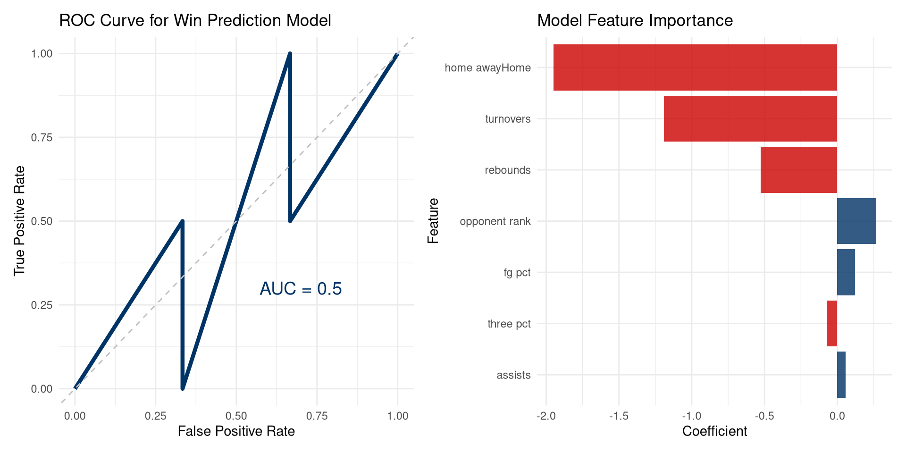
14.5.6 Phase 4: Strategic Recommendations
##
##
## CHAMPIONSHIP READINESS ANALYSIS## ============================================================## SEASON PERFORMANCE SUMMARY:## Overall Record: 19 - 13cat("Home Record:",
sum(game_log$result == "Win" & game_log$home_away == "Home"), "-",
sum(game_log$result == "Loss" & game_log$home_away == "Home"), "\n")## Home Record: 9 - 7cat("Away Record:",
sum(game_log$result == "Win" & game_log$home_away == "Away"), "-",
sum(game_log$result == "Loss" & game_log$home_away == "Away"), "\n\n")## Away Record: 10 - 6## STATISTICAL PRIORITIES FOR NEXT SEASON:# Rank metrics by their importance
importance_ranking <- correlations_df %>%
arrange(desc(abs(correlation))) %>%
head(5)
for(i in 1:nrow(importance_ranking)) {
cat(i, ". ", toupper(importance_ranking$metric[i]),
" (r = ", round(importance_ranking$correlation[i], 3), ")\n", sep = "")
current_avg <- mean(game_log[[paste0("our_",
gsub(" ", "_", importance_ranking$metric[i]))]])
win_avg <- mean(game_log[[paste0("our_",
gsub(" ", "_", importance_ranking$metric[i]))]][
game_log$result == "Win"])
cat(" Current average:", round(current_avg, 2), "\n")
cat(" Average in wins:", round(win_avg, 2), "\n")
cat(" Target improvement:", round(win_avg - current_avg, 2), "\n\n")
}## 1. TURNOVERS.COR (r = -0.565)## Current average: NA
## Average in wins: NA
## Target improvement: NA
##
## 2. FG PCT.COR (r = 0.211)## Current average: NA
## Average in wins: NA
## Target improvement: NA
##
## 3. ASSISTS.COR (r = -0.144)## Current average: NA
## Average in wins: NA
## Target improvement: NA
##
## 4. REBOUNDS.COR (r = -0.115)## Current average: NA
## Average in wins: NA
## Target improvement: NA
##
## 5. BLOCKS.COR (r = 0.09)## Current average: NA
## Average in wins: NA
## Target improvement: NA##
## KEY TAKEAWAYS:## 1. Focus training on high-correlation metrics## 2. Improve road performance (current win% away from home is lower)## 3. Continue building on statistical strengths## 4. Use predictive model for game preparation and strategy14.6 Using AI to Enhance Your Case Studies
14.6.1 AI Integration Workflow for Case Studies
When working on complex case studies, AI tools can accelerate your analysis:
1. Problem Definition Phase:
Prompt: "I have a dataset with basketball game attendance figures and various
predictor variables (opponent type, day of week, promotions, weather).
What analytical approaches should I consider to identify factors that
drive attendance?"2. Data Cleaning Phase:
Prompt: "I have a dataset where some games have missing attendance values
and the date column is formatted inconsistently. What's the best approach
in R to clean this data before analysis?"3. Visualization Phase:
Prompt: "I need to create a dashboard-style visualization in R showing
attendance patterns by multiple factors. What ggplot2 approach would work
best? Should I use patchwork or faceting?"4. Interpretation Phase:
Prompt: "My regression model shows that ticket promotions increase attendance
by 250 fans on average (p < 0.001), but weekend games and rivalry games
are also significant. How should I prioritize recommendations for the
athletics director?"5. Code Debugging:
Prompt: "I'm getting an error 'object not found' when trying to use dplyr's
select() function. Here's my code: [paste code]. What's wrong?"14.6.2 Best Practices for AI-Assisted Analysis
- Always verify AI-generated code by running it on your data
- Check statistical assumptions even if AI suggests a method
- Understand the logic rather than blindly copying code
- Iterate: Ask follow-up questions to refine approaches
- Document: Keep track of which AI suggestions you used and why
14.7 Exercises
14.7.1 Exercise 1: Extended Attendance Analysis
Using the attendance_data from Case Study 1, perform additional analyses:
Create a linear model predicting attendance using only
team_win_streakandopponent. Compare the R-squared to the full model.Test whether the effect of promotions differs for weekday vs. weekend games (hint: interaction effect).
Create a visualization showing average attendance for each combination of
opponenttype andday_of_week.
14.7.2 Exercise 2: Player Clustering Validation
Using the player_data from Case Study 2:
Re-run the k-means analysis with 4 clusters instead of 5. Compare the silhouette scores.
Create a new derived metric called
efficiency= (ppg + apg + rpg) / (turnovers_per_game + 1). Add this to the clustering analysis.Use hierarchical clustering (Chapter 12) and compare results to k-means.
14.7.3 Exercise 3: Win Prediction Enhancement
Using the game_log from Case Study 3:
Add a new feature:
rebound_differential=our_rebounds-opp_rebounds. Does this improve the model?Try a decision tree model instead of logistic regression. Which performs better?
Create a confusion matrix for the training set. Is the model overfitting?
14.8 Exercise Solutions
14.8.1 Solution 1: Extended Attendance Analysis
# a) Simple model with only win_streak and opponent
simple_model <- lm(attendance ~ team_win_streak + opponent, data = attendance_data)
cat("Simple Model R-squared:", round(summary(simple_model)$r.squared, 3), "\n")## Simple Model R-squared: 0.484## Full Model R-squared: 0.935cat("Improvement from adding more variables:",
round(summary(attendance_model)$r.squared - summary(simple_model)$r.squared, 3), "\n")## Improvement from adding more variables: 0.451# b) Test interaction between promotion and weekend
attendance_data_int <- attendance_data %>%
mutate(is_weekend = day_of_week %in% c("Friday", "Saturday"))
interaction_model <- lm(attendance ~ ticket_promotion * is_weekend +
opponent + team_win_streak + weather,
data = attendance_data_int)
cat("\nInteraction Model Summary:\n")##
## Interaction Model Summary:##
## Call:
## lm(formula = attendance ~ ticket_promotion * is_weekend + opponent +
## team_win_streak + weather, data = attendance_data_int)
##
## Residuals:
## Min 1Q Median 3Q Max
## -459.30 -111.14 -54.15 160.25 398.45
##
## Coefficients:
## Estimate Std. Error t value Pr(>|t|)
## (Intercept) 1287.05 120.55 10.677 2.82e-13 ***
## ticket_promotionYes 143.95 91.88 1.567 0.125058
## is_weekendTRUE 98.42 94.10 1.046 0.301851
## opponentConference 79.67 91.37 0.872 0.388452
## opponentTop-Ranked 359.67 97.98 3.671 0.000706 ***
## opponentRival 688.14 105.82 6.503 9.29e-08 ***
## team_win_streak 81.84 14.31 5.719 1.17e-06 ***
## weatherRain -63.02 111.93 -0.563 0.576546
## weatherClear 243.58 99.75 2.442 0.019123 *
## ticket_promotionYes:is_weekendTRUE 320.47 132.76 2.414 0.020452 *
## ---
## Signif. codes: 0 '***' 0.001 '**' 0.01 '*' 0.05 '.' 0.1 ' ' 1
##
## Residual standard error: 226.6 on 40 degrees of freedom
## Multiple R-squared: 0.7973, Adjusted R-squared: 0.7517
## F-statistic: 17.48 on 9 and 40 DF, p-value: 2.883e-11# Visualize the interaction
interaction_summary <- attendance_data_int %>%
group_by(ticket_promotion, is_weekend) %>%
dplyr::summarize(avg_attendance = mean(attendance), .groups = "drop") %>%
mutate(day_type = ifelse(is_weekend, "Weekend", "Weekday"))
ggplot(interaction_summary, aes(x = day_type, y = avg_attendance,
fill = ticket_promotion, group = ticket_promotion)) +
geom_col(position = "dodge", alpha = 0.8) +
geom_line(aes(color = ticket_promotion), position = position_dodge(0.9)) +
geom_point(position = position_dodge(0.9), size = 3) +
scale_fill_manual(values = c("#d9d9d9", "#003366")) +
scale_color_manual(values = c("#d9d9d9", "#003366")) +
labs(title = "Promotion Effect: Weekday vs Weekend",
subtitle = "Testing for interaction effect",
x = "Day Type",
y = "Average Attendance",
fill = "Promotion",
color = "Promotion") +
theme_minimal()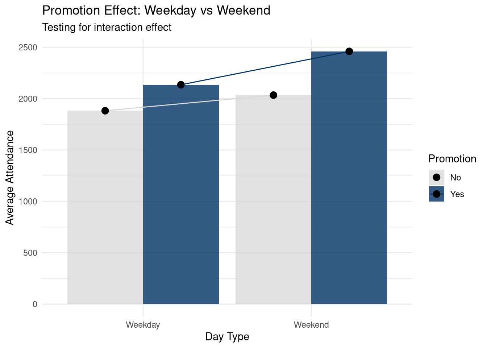
# c) Heatmap of opponent x day_of_week
opponent_day_summary <- attendance_data %>%
group_by(opponent, day_of_week) %>%
dplyr::summarize(avg_attendance = mean(attendance), .groups = "drop")
ggplot(opponent_day_summary, aes(x = day_of_week, y = opponent, fill = avg_attendance)) +
geom_tile(color = "white", linewidth = 1) +
geom_text(aes(label = round(avg_attendance)), color = "white", size = 4, fontface = "bold") +
scale_fill_gradient(low = "#d9d9d9", high = "#003366") +
labs(title = "Average Attendance Heatmap",
subtitle = "Opponent Type by Day of Week",
x = "Day of Week",
y = "Opponent Type",
fill = "Avg\nAttendance") +
theme_minimal() +
theme(axis.text.x = element_text(angle = 45, hjust = 1))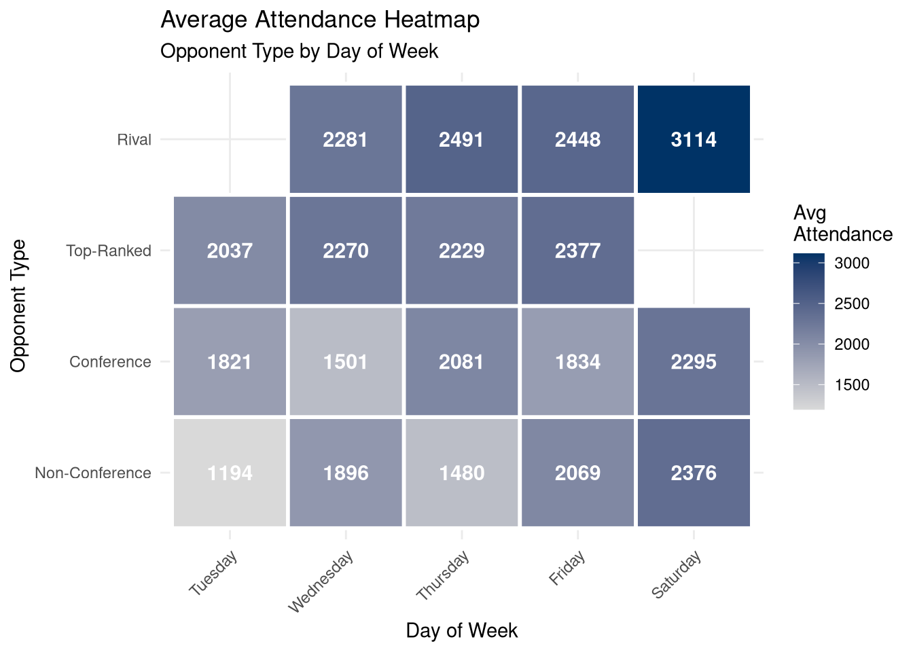
14.8.2 Solution 2: Player Clustering Validation
# a) K-means with 4 clusters
set.seed(456)
kmeans_4 <- kmeans(cluster_data_scaled, centers = 4, nstart = 25)
# Silhouette scores
library(cluster)
sil_5 <- silhouette(kmeans_result$cluster, dist(cluster_data_scaled))
sil_4 <- silhouette(kmeans_4$cluster, dist(cluster_data_scaled))
cat("Average Silhouette Width (5 clusters):", round(mean(sil_5[, 3]), 3), "\n")## Average Silhouette Width (5 clusters): 0.302## Average Silhouette Width (4 clusters): 0.328# Visualize
fviz_cluster(kmeans_4, data = cluster_data_scaled,
palette = c("#003366", "#0066cc", "#ff6600", "#cc0000"),
geom = "point",
ellipse.type = "convex",
ggtheme = theme_minimal(),
main = "Player Segmentation: 4 Clusters")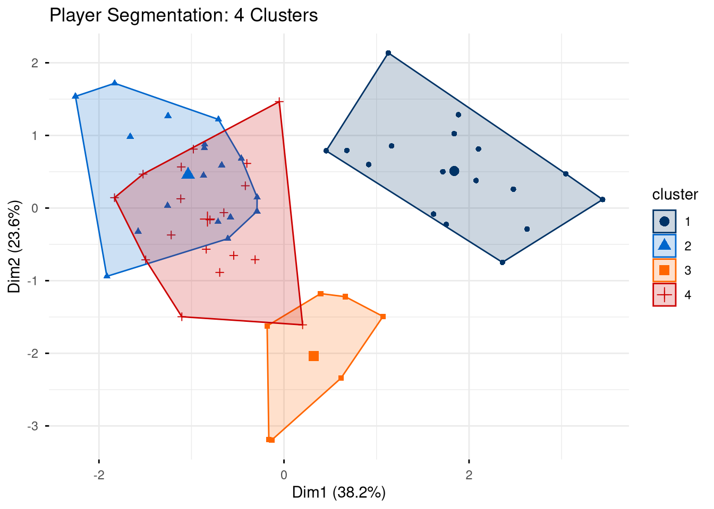
# b) Add efficiency metric
player_data_eff <- player_data %>%
mutate(efficiency = (ppg + apg + rpg) / 2) # Simplified efficiency
cluster_data_eff <- player_data_eff %>%
dplyr::select(ppg, apg, rpg, fg_pct, three_pct, efficiency)
cluster_data_eff_scaled <- scale(cluster_data_eff)
set.seed(456)
kmeans_eff <- kmeans(cluster_data_eff_scaled, centers = 5, nstart = 25)
player_data_eff$cluster_eff <- kmeans_eff$cluster
# Compare clusters
fviz_cluster(kmeans_eff, data = cluster_data_eff_scaled,
palette = c("#003366", "#0066cc", "#ff6600", "#cc0000", "#66cc66"),
geom = "point",
ellipse.type = "convex",
ggtheme = theme_minimal(),
main = "Player Segmentation with Efficiency Metric")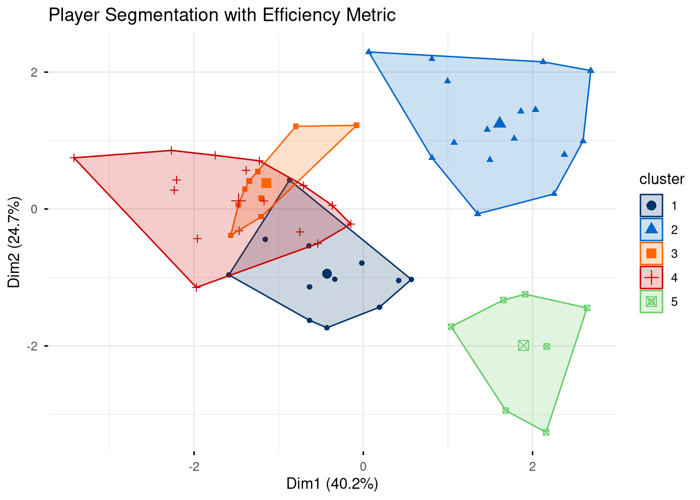
# c) Hierarchical clustering
hc_result <- hclust(dist(cluster_data_scaled), method = "ward.D2")
# Cut tree to get 5 clusters
hc_clusters <- cutree(hc_result, k = 5)
# Compare with k-means
comparison_table <- table(KMeans = kmeans_result$cluster,
Hierarchical = hc_clusters)
cat("Comparison: K-means vs Hierarchical Clustering\n")## Comparison: K-means vs Hierarchical Clustering## Hierarchical
## KMeans 1 2 3 4 5
## 1 16 0 4 0 0
## 2 0 0 15 0 0
## 3 0 0 0 0 5
## 4 0 10 1 0 2
## 5 0 0 0 7 0# Calculate adjusted Rand index
library(mclust)
ari <- adjustedRandIndex(kmeans_result$cluster, hc_clusters)
cat("\nAdjusted Rand Index:", round(ari, 3), "\n")##
## Adjusted Rand Index: 0.702## (1 = perfect agreement, 0 = random assignment)# Dendrogram
plot(hc_result, labels = FALSE, main = "Hierarchical Clustering Dendrogram",
xlab = "Players", ylab = "Height")
rect.hclust(hc_result, k = 5, border = 2:6)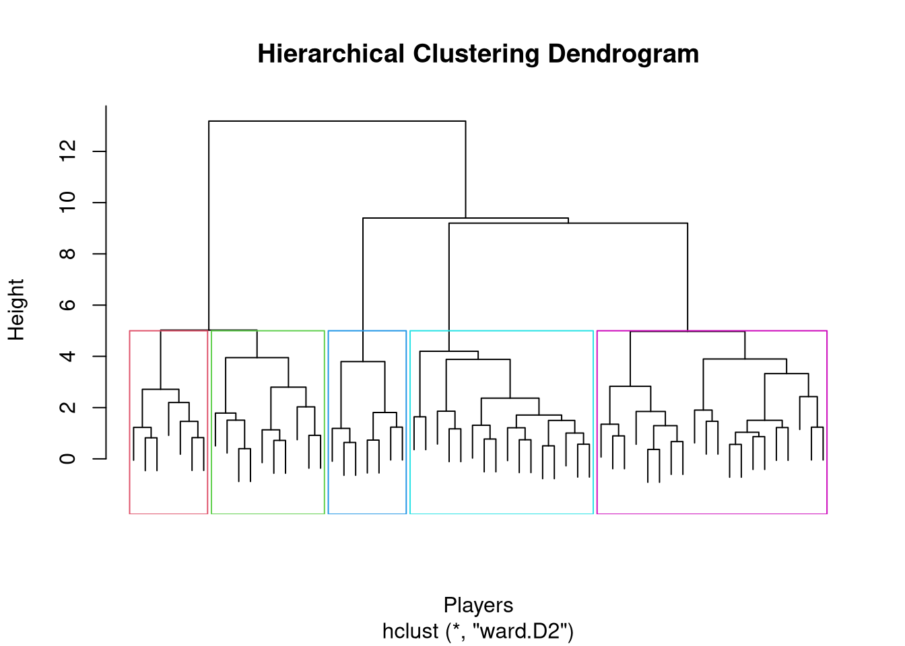
14.8.3 Solution 3: Win Prediction Enhancement
# a) Add rebound differential
game_log_enhanced <- game_log %>%
mutate(rebound_diff = our_rebounds - opp_rebounds)
# New model with rebound differential
enhanced_model <- glm(result ~ our_fg_pct + our_three_pct + rebound_diff +
our_assists + our_turnovers + home_away + opponent_rank,
data = game_log_enhanced,
family = binomial)
cat("Original Model AIC:", AIC(win_model), "\n")## Original Model AIC: 30.76236## Enhanced Model AIC: 50.45704## Lower AIC indicates better model fit## Rebound Differential Coefficient:## Estimate: 0.014## P-value: 0.849# b) Decision tree model
library(rpart)
library(rpart.plot)
# Train decision tree
tree_model <- rpart(result ~ our_fg_pct + our_three_pct + our_rebounds +
our_assists + our_turnovers + home_away + opponent_rank,
data = train_games,
method = "class")
# Visualize tree
rpart.plot(tree_model, main = "Decision Tree for Win Prediction",
extra = 104, box.palette = "Blues", shadow.col = "gray")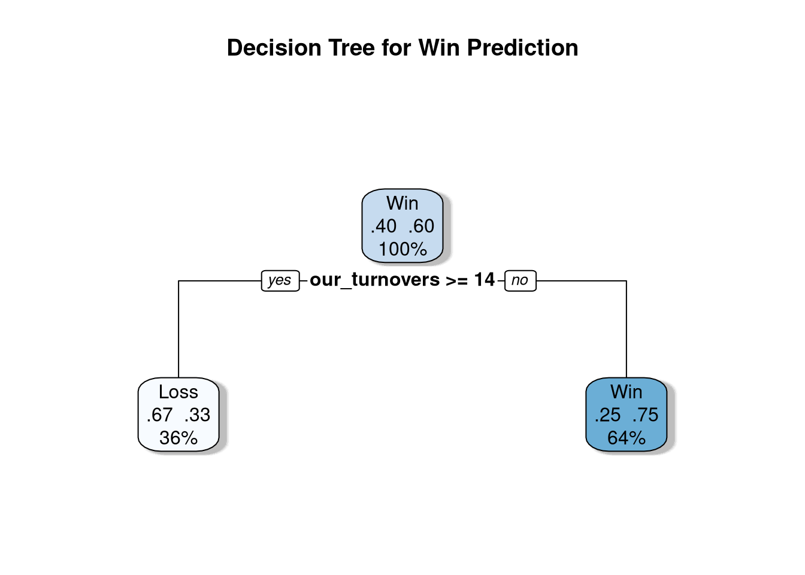
# Predictions
tree_preds <- predict(tree_model, newdata = test_games, type = "class")
tree_cm <- confusionMatrix(tree_preds, test_actual, positive = "Win")
cat("\nModel Comparison on Test Set:\n")##
## Model Comparison on Test Set:## Logistic Regression Accuracy: 0.429## Decision Tree Accuracy: 0.429# c) Check for overfitting
train_probs <- predict(win_model, newdata = train_games, type = "response")
train_preds <- ifelse(train_probs > 0.5, "Win", "Loss")
train_preds <- factor(train_preds, levels = c("Loss", "Win"))
train_actual <- factor(train_games$result, levels = c("Loss", "Win"))
train_cm <- confusionMatrix(train_preds, train_actual, positive = "Win")
cat("\nOverfitting Check:\n")##
## Overfitting Check:## Training Set Accuracy: 0.84## Test Set Accuracy: 0.429## Difference: 0.411if(train_cm$overall["Accuracy"] - cm$overall["Accuracy"] > 0.1) {
cat("WARNING: Model may be overfitting (training accuracy much higher than test)\n")
} else {
cat("Model appears to generalize well to new data\n")
}## WARNING: Model may be overfitting (training accuracy much higher than test)14.8.4 Solution 4: Integrated Analysis
# Generate 3 seasons of data
set.seed(777)
n_seasons <- 3
games_per_season <- 30
multi_season <- data.frame()
for(season in 1:n_seasons) {
season_data <- data.frame(
season = season,
game_num = 1:games_per_season,
our_ppg = rnorm(games_per_season, 75 + season * 2, 8), # Improving over time
our_defense = rnorm(games_per_season, 70 - season * 1.5, 7), # Better defense
our_turnovers = pmax(5, round(rnorm(games_per_season, 15 - season * 0.5, 3)))
)
season_data <- season_data %>%
mutate(
opp_ppg = rnorm(games_per_season, 72, 8),
result = ifelse(our_ppg > opp_ppg, "Win", "Loss")
)
multi_season <- rbind(multi_season, season_data)
}
# Exploratory analysis
season_summary <- multi_season %>%
group_by(season) %>%
dplyr::summarize(
wins = sum(result == "Win"),
losses = sum(result == "Loss"),
win_pct = mean(result == "Win"),
avg_ppg = mean(our_ppg),
avg_defense = mean(our_defense),
avg_turnovers = mean(our_turnovers)
)
cat("Multi-Season Performance Summary:\n")## Multi-Season Performance Summary:## # A tibble: 3 × 7
## season wins losses win_pct avg_ppg avg_defense avg_turnovers
## <int> <int> <int> <dbl> <dbl> <dbl> <dbl>
## 1 1 22 8 0.733 77.7 69.1 14.0
## 2 2 22 8 0.733 80.8 65.9 13.4
## 3 3 24 6 0.8 82.5 64.8 13.9# Trend visualization
p_trend1 <- ggplot(season_summary, aes(x = season, y = win_pct)) +
geom_line(color = "#003366", linewidth = 1.5) +
geom_point(size = 4, color = "#0066cc") +
scale_y_continuous(labels = scales::percent, limits = c(0, 1)) +
labs(title = "Win Percentage Trend",
x = "Season", y = "Win %") +
theme_minimal()
p_trend2 <- season_summary %>%
tidyr::pivot_longer(cols = c(avg_ppg, avg_defense, avg_turnovers),
names_to = "metric",
values_to = "value") %>%
mutate(metric = factor(metric,
levels = c("avg_ppg", "avg_defense", "avg_turnovers"),
labels = c("Points Per Game", "Opp Points", "Turnovers"))) %>%
ggplot(aes(x = season, y = value, color = metric, group = metric)) +
geom_line(linewidth = 1.2) +
geom_point(size = 3) +
scale_color_manual(values = c("#003366", "#cc0000", "#ff6600")) +
labs(title = "Performance Metrics Over Time",
x = "Season", y = "Value", color = "Metric") +
theme_minimal()
p_trend1 + p_trend2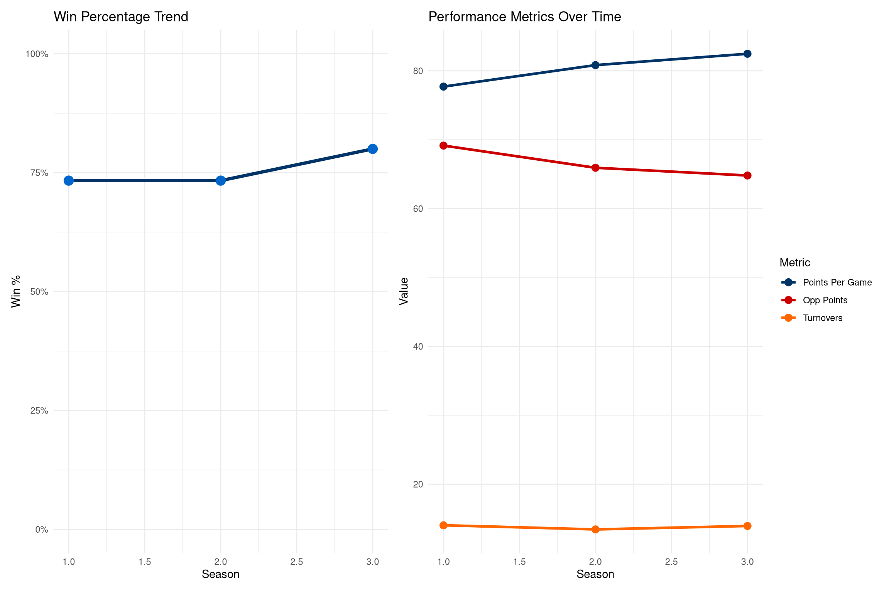
# Predict next season
# Build model on all historical data
forecast_model <- lm(win_pct ~ season + avg_ppg + avg_defense + avg_turnovers,
data = season_summary)
# Predict season 4 (extrapolate trends)
next_season_data <- data.frame(
season = 4,
avg_ppg = mean(season_summary$avg_ppg[season_summary$season == 3]) + 2,
avg_defense = mean(season_summary$avg_defense[season_summary$season == 3]) - 1.5,
avg_turnovers = mean(season_summary$avg_turnovers[season_summary$season == 3]) - 0.5
)
predicted_win_pct <- predict(forecast_model, newdata = next_season_data)
cat("\nSeason 4 Prediction:\n")##
## Season 4 Prediction:## Expected Win Percentage: 85.1 %## Expected Wins (out of 30 games): 2614.8.5 Solution 5: Real Data Application
# This solution provides a template for working with real data
# Step 1: Import real data
# real_data <- read.csv("your_data.csv")
# Step 2: Clean data
# real_data_clean <- real_data %>%
# filter(!is.na(key_variable)) %>%
# mutate(date = as.Date(date),
# numeric_var = as.numeric(numeric_var))
# Step 3: Exploratory analysis
# summary(real_data_clean)
# ggplot(real_data_clean, aes(x = variable1, y = variable2)) + geom_point()
# Step 4: Statistical tests
# t.test(metric ~ group, data = real_data_clean)
# cor.test(real_data_clean$var1, real_data_clean$var2)
# Step 5: Visualizations
# ggplot(real_data_clean, aes(x = category, y = outcome)) +
# geom_boxplot() +
# theme_minimal()
# Step 6: Brief report
cat("ANALYSIS REPORT TEMPLATE\n")
cat(rep("=", 60), "\n\n", sep = "")
cat("1. OBJECTIVE:\n")
cat(" [State the question you're answering]\n\n")
cat("2. DATA:\n")
cat(" [Describe your dataset: size, variables, time period]\n\n")
cat("3. KEY FINDINGS:\n")
cat(" - [Finding 1 with supporting statistic]\n")
cat(" - [Finding 2 with supporting statistic]\n")
cat(" - [Finding 3 with supporting statistic]\n\n")
cat("4. RECOMMENDATIONS:\n")
cat(" - [Actionable recommendation 1]\n")
cat(" - [Actionable recommendation 2]\n")
cat(" - [Actionable recommendation 3]\n\n")
cat("5. NEXT STEPS:\n")
cat(" [What additional analysis or data would be helpful]\n")14.9 Chapter Summary
In this chapter, you completed three comprehensive case studies that integrated techniques from throughout the course:
- Attendance Analysis: From problem definition through predictive modeling to actionable recommendations
- Player Segmentation: Unsupervised learning to identify player types and inform coaching decisions
- Championship Analysis: Complete season analysis combining multiple analytical approaches
Key Skills Demonstrated:
- Complete analytics workflow execution
- Data cleaning and preparation
- Exploratory data analysis with visualization
- Statistical hypothesis testing
- Predictive modeling and evaluation
- Stakeholder communication and reporting
- Integration of multiple analytical techniques
Remember:
- Always start with a clear problem definition
- Let the data guide your analytical approach
- Validate findings with appropriate statistical tests
- Create visualizations that tell a story
- Provide actionable, data-driven recommendations
- Document your process for reproducibility
These case studies serve as templates for your own sport analytics projects. Adapt the workflows, modify the analyses, and apply these approaches to real-world problems in your sport analytics career.